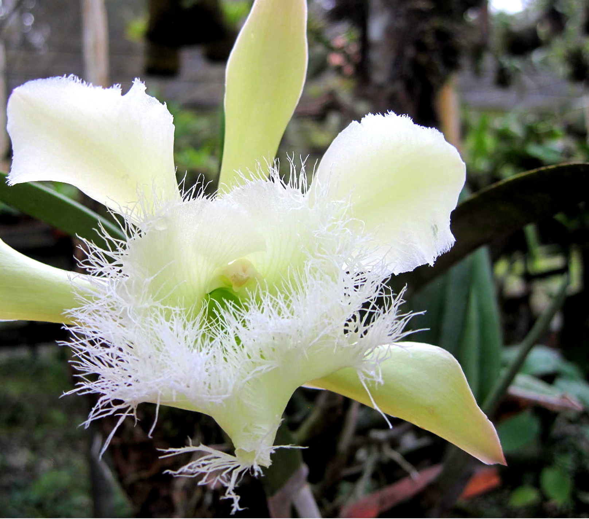

Orquidea: Características de la Orquídea Rhyncholaelia Digbyana. Es una especie de orquídea originaria de Honduras,
tiene un color blanco verdoso, una belleza particular y su fragancia es cítrica. Es una Orquídea Epifita, es decir,
que vive sobre otra planta, pero no se alimenta de ella y genera su propia energía a través de la fotosíntesis.
TEOCINTE (Dioon mejiae): es una planta endémica de Honduras, entre las cícadas únicamente dos especies han sido descritas para
Honduras Dioon mejiae (teocinte) y Zamia standleyi (camotillo o yuca de ratón) y se les encuentran principalmente en los departamentos de
Olancho y Yoro, para Dioon mientras que Zamia su distribución es más amplia.